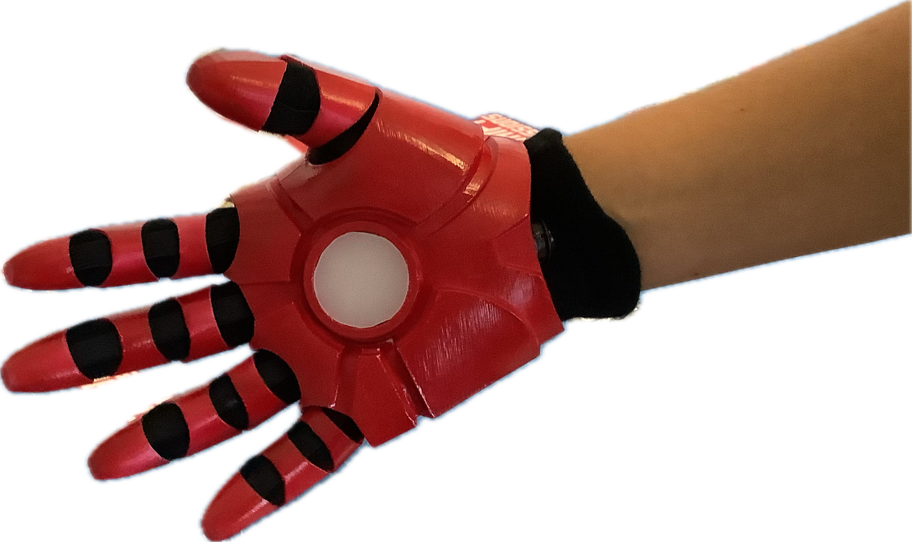
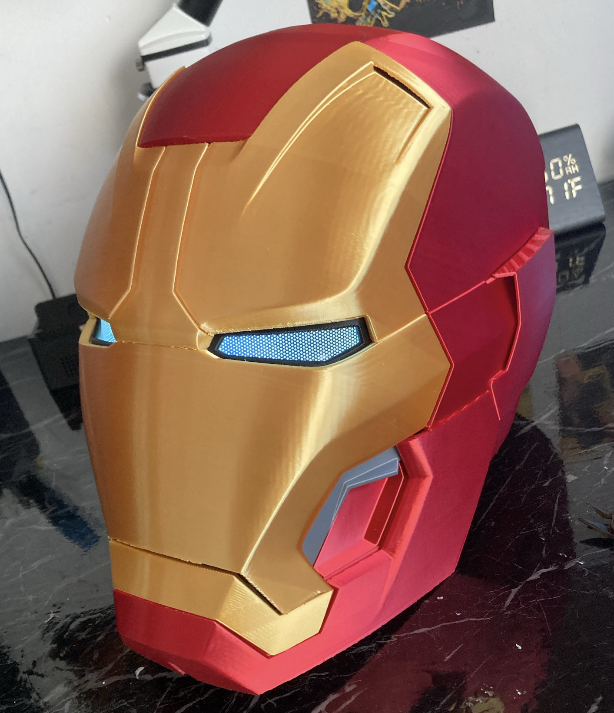
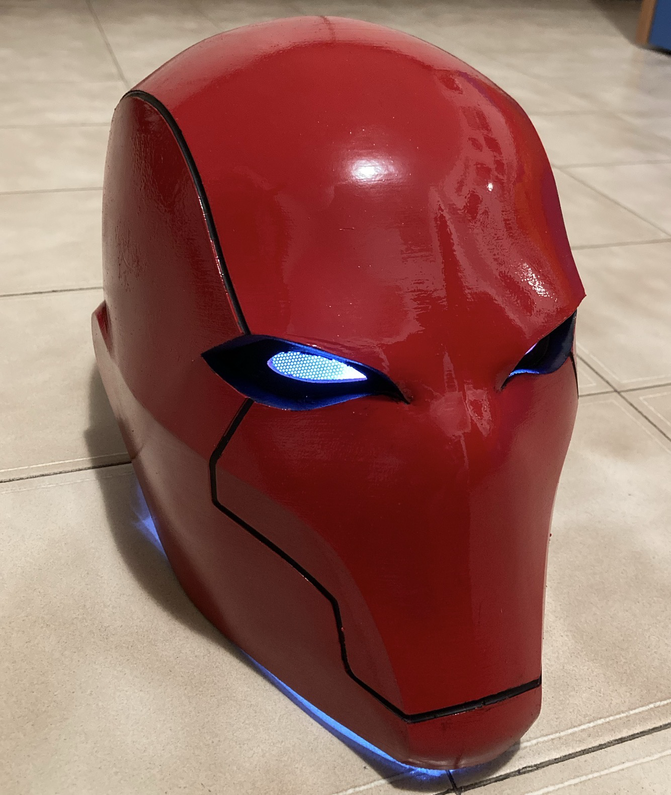
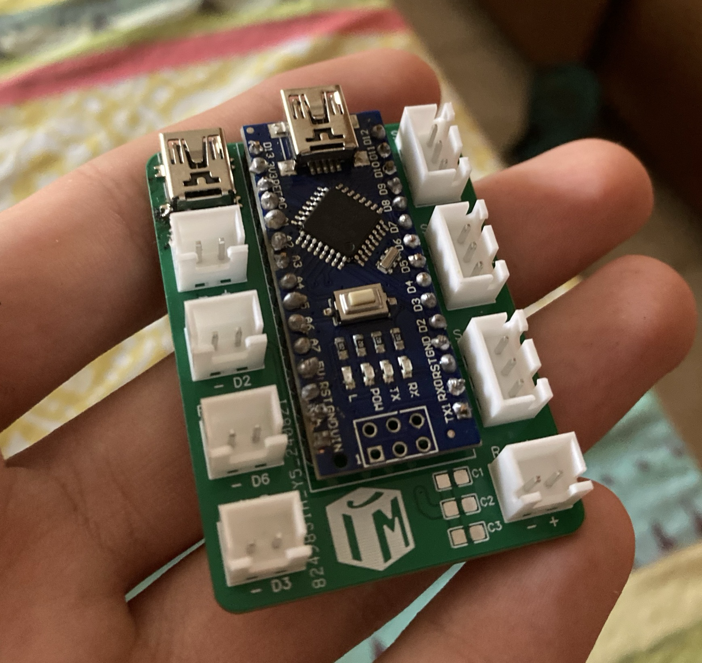
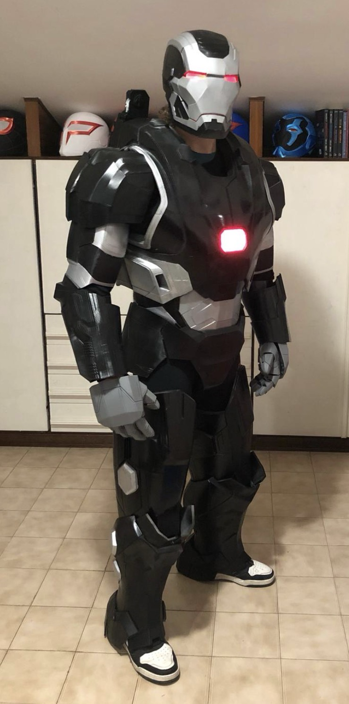

Leon Printing

Hello there! Glad you landed on my page.
Let me introduce, I'm Leon, a 16 years old kid
with a mad passion for everything that concerns
science, electronics, mechanics and, of course, 3D printing.
So what exactly do I do?
Well in this page you'll find out about
my past works and about what I can do now.
Everything started because I wanted
my very own realistic Iron Man glove.
I looked for a 3D printing center
that made it possible and then
eventually got very hyped and... well
the rest is history.
|
|

|
I kept learning...

...getting better...

...and better.

I studied electronics enough
to design my own circuit boards
until...

I finally achieved my dream.

Today, I can confidently say
I could help you with:
- 3D printing (and a little CAD);
- C++ and Python coding;
- PCB design;
- Electronics project building.
If you have any questions, requests or
you'd like to work together,
feel free to contact me!
IG: @leon_prints_stuff
E-mail: leonprinting.qna@gmail.com